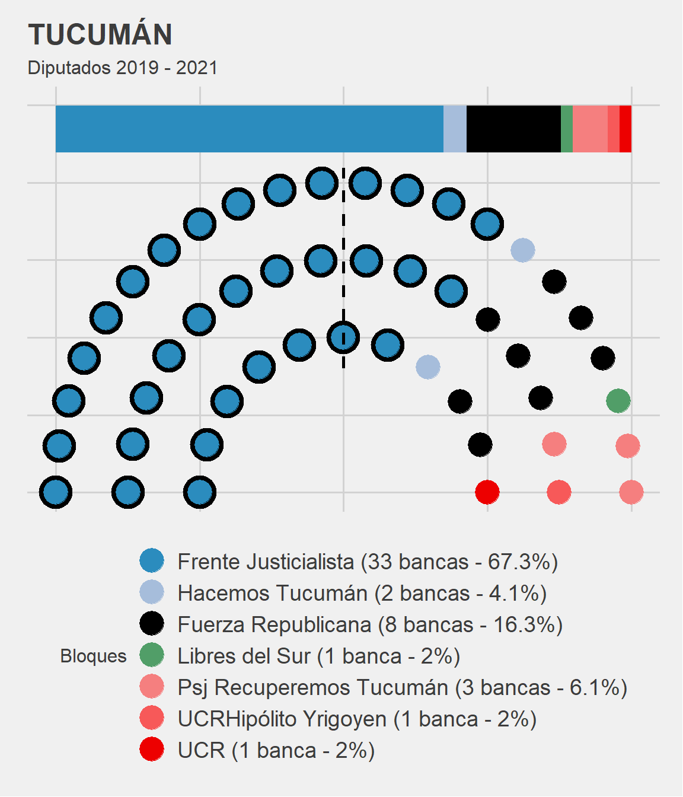

Aprovechamos el distanciamiento social para comaprtir algunas de las cosas que venían quedando pendiente de actualizar.
Ya se pueden leer en TuQmanoR dos de los ejercicios con datos y visualizaciones que hicimos con les compañeres de menta Comunicación:
Uno primero consistió en analizar la información asociada a cada una de las cuentas de legisladores (Senadores y Diputades) argentinos que conformarán el Congreso Nacional en el periódo 2019-2021: cómo son utilizadas las cuentas, cómo interactúa el público con sus publicaciones y cómo podemos distinguir a las cuentas en distintos grupos o clusters de afinidad.
Más recientemnte publicamos un breve análisis basado en los discursos que les presidentes emiitieron en las inauguraciones de Sesiones Ordinarias ante la Asamblea Legislativa desde el retorno de la democrácia (1984 - 2020). Un poco de minería de texto sobre las más de 350 mil palabras contenidas en 37 discursos de 8 presidentes.
En esta entrada quiero mostrar una librería (
ggparliament)1 que nos permite a quienes hacemos análisis político / politológico graficar de manera clara y sintética la distribución de poder en las cámaras legislativas.
El que sigue es un ejemplo de la actual composición de la Legislatura de la Provincia de TuQland.
Receta para una legislatuRa en 3 pasos
- En primer lugar tenemos que armar una base de datos como la de abajo para tener a mano todos los parámetros que nos permitirán customizar lo más posible nuestra vizualización.
En este caso mantuve los nombres de las columnas en el ejemplo original de la librería, por lo que muchos valores no tienen demasiado sentido. Estamos hablando de una sola unidad (Tucumán) y un solo periódo de tiempo (2020). Pero nuestra base de datos podría contener, por ejemplo, a los 24 distritos y múltiples composiciones a lo largo del tiempo. Luego hay variables que funcionan como id (party_short), otra para imprimir las etiquetas (party_long), la cantidad de bancas (seats) y hasta la elección de un color que se asocie a la fuerza política en cuestión.
library(tidyverse)
diputados_tucuman <- read_csv("https://raw.githubusercontent.com/TuQmano/data_TuQmanoR/master/legislatuRas/tucuman.csv") %>%
print()# A tibble: 7 × 9
year country house party_long party_short seats government colour orden
<dbl> <chr> <chr> <chr> <chr> <dbl> <dbl> <chr> <dbl>
1 2020 TUCUMAN DIPUTADOS Frente Just… PJ 33 1 #2b8c… 3
2 2020 TUCUMAN DIPUTADOS Fuerza Repu… FuerzaR 8 0 #0000… 2
3 2020 TUCUMAN DIPUTADOS Hacemos Tuc… Hacemos T 2 0 #a6bd… 3
4 2020 TUCUMAN DIPUTADOS Libres del … Libres 1 0 #519e… 1
5 2020 TUCUMAN DIPUTADOS Psj Recuper… PSJ 3 0 #f57f… 1
6 2020 TUCUMAN DIPUTADOS UCRHipólito… UCRHY 1 0 #f759… 1
7 2020 TUCUMAN DIPUTADOS UCR (1 banc… UCR 1 0 #ed00… 1- El segundo paso consiste en transformar esa base de datos en otra que tenga un formato adecuado para luego poder realizar la visualización con un agregado de
ggplot2. La funciónparliament_datadeggparliamentes la que se encarga de la magia. Abajo un detalle de los parámetros que podemos utilizar.
# VOY A CREAR EL OBJETO DE ggparliament con la data ordenada para el plot
data_diputados_tucuman<- ggparliament::parliament_data(diputados_tucuman, #datos originales
type = "semicircle", # forma del hemiciclo
parl_rows =3, # cantidad de filas
party_seats = diputados_tucuman$seats, # número de bancas
plot_order = diputados_tucuman$orden) %>% #orden de partidos en hemiciclo
mutate(colour = as.character(colour)) %>% # vector de texto para codigo HEX de colores asignados previamente
as_tibble() %>%
print()# A tibble: 49 × 13
year country house party_long party_short seats government colour orden
<dbl> <chr> <chr> <chr> <chr> <dbl> <dbl> <chr> <dbl>
1 2020 TUCUMAN DIPUTADOS Frente Jus… PJ 33 1 #2b8c… 3
2 2020 TUCUMAN DIPUTADOS Frente Jus… PJ 33 1 #2b8c… 3
3 2020 TUCUMAN DIPUTADOS Frente Jus… PJ 33 1 #2b8c… 3
4 2020 TUCUMAN DIPUTADOS Frente Jus… PJ 33 1 #2b8c… 3
5 2020 TUCUMAN DIPUTADOS Frente Jus… PJ 33 1 #2b8c… 3
6 2020 TUCUMAN DIPUTADOS Frente Jus… PJ 33 1 #2b8c… 3
7 2020 TUCUMAN DIPUTADOS Frente Jus… PJ 33 1 #2b8c… 3
8 2020 TUCUMAN DIPUTADOS Frente Jus… PJ 33 1 #2b8c… 3
9 2020 TUCUMAN DIPUTADOS Frente Jus… PJ 33 1 #2b8c… 3
10 2020 TUCUMAN DIPUTADOS Frente Jus… PJ 33 1 #2b8c… 3
# ℹ 39 more rows
# ℹ 4 more variables: x <dbl>, y <dbl>, row <int>, theta <dbl>Observamos que mientras la base de datos original tenía un largo de \(7x9\) (\(7\) filas - una por cada partido político- y \(9\) columnas o variables), con la transformación se creó un nuevo objeto de \(49x13\). Ahora el largo de la base tiene una fila por legislador, extendiendo la información agregada de la base original a cada miembro de un partido. Además se generaron nuevas variables x, y, row, theta que marcan la posición en que se graficará cada una de las bancas.
- Por último una secuencia de código con la que realizamos el gráfico. Notar que las geometrías que especificamos a
ggplotson del tipo genéricogeom_parliament_. Cada una agrega una capa:
Con
geom_parliament_seatspodemos manipular el tamaño del punto que representa un escaño.En
geom_parliament_govermentestamos especificando parámetros para resaltar cuáles escaños corresponden al partido de gobierno.Con
geom_parliament_barincorporamos la barra superior que agrega el \(\%\) de bancas de cada espacio.
Por último, con draw_majoritythreshold podemos marcar la posición que permite distinguir si hay un espacio político que alcanza la mayoría
library(tidyverse)
library(ggparliament)
library(ggthemes)
data_diputados_tucuman %>% as_tibble() %>%
ggplot(aes(x, y, colour = party_long)) +
geom_parliament_seats(size = 7) + # tamaño de bancas (puntos)
geom_highlight_government(government == 1, colour = "black", size = 8) + # circulo negro al oficialismo
geom_parliament_bar(party = party_short, label = F) + # barra con proporción de bancas
draw_majoritythreshold(n = 31, label = F, type = "semicircle") + # dibuja el limite de mayoría
scale_colour_manual(values = data_diputados_tucuman$colour, #asigno colores
limits = data_diputados_tucuman$party_long) +
guides(colour = guide_legend(nrow=7)) + # customiza etiquetas
labs(title = "TUCUMÁN",
subtitle = "Diputados 2019 - 2021",
colour = "Bloques") +
theme_fivethirtyeight() + # estética de gráficos estilo FiveThiryEight
theme(panel.grid = element_blank(),
axis.text = element_blank(),
legend.position = "bottom",
legend.text = element_text(size = 14))
Será hasta la próxima entrada.
Footnotes
Acá puede consultarse el repositorio oficial de la liberería con más ejemplos y definiciones https://github.com/RobWHickman/ggparliament↩︎